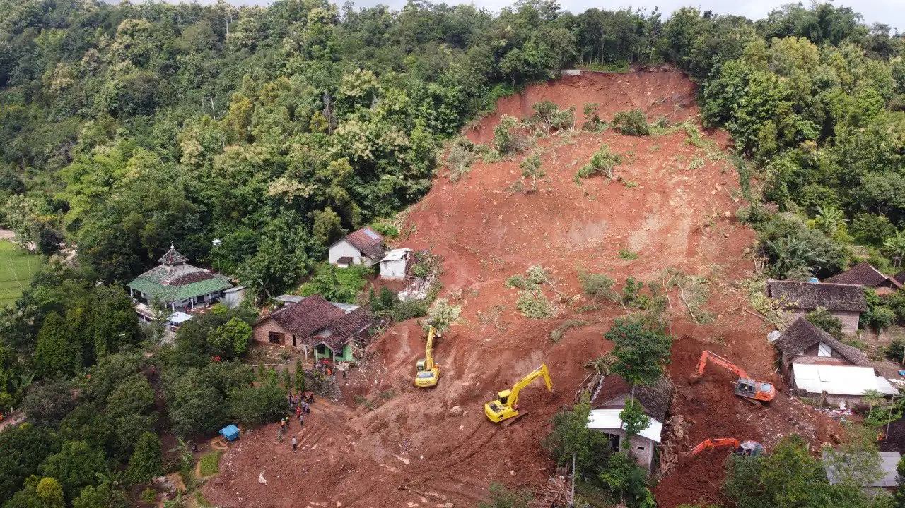
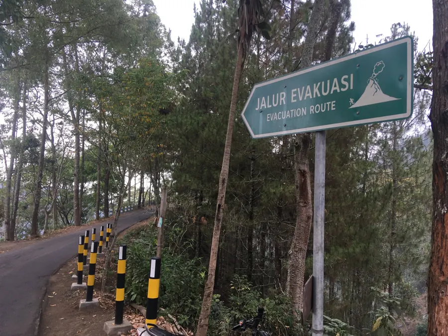
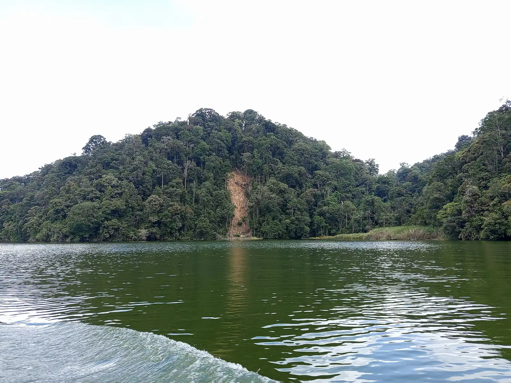

Mengenal dan Menghadapi Longsor
Catatan belajar tentang apa yang membuat lereng runtuh, tanda yang bisa kamu lihat lebih dulu, dan apa yang dilakukan sebelum, saat, dan sesudahnya.

Catatan sumberRingkasan disarikan dari siaran resmi BNPB dan Badan Geologi (Kementerian ESDM). Sebagian sumber berupa berita kejadian, bukan buku panduan. Ringkasan ini tidak menggantikan arahan BPBD dan petugas setempat.
Baca urut dari 01 sampai 05. Bagian pinggir ini isinya definisi dan sumber.
Pengertian01 Apa itu longsor dan apa penyebabnya?
Longsor terjadi ketika tanah di lereng yang labil bergerak turun dan menimbulkan bencana, terutama bagi warga yang tinggal di tempat lebih rendah.
Badan Geologi menyebut kejadian ini gerakan tanah longsor.
Penampang lereng, empat langkah
- Hujan lebat turun dan meresap ke lereng.
- Tekanan air di dalam tanah naik.
- Kekuatan tanah turun.
- Lereng gagal: tanah bergerak turun ke permukiman.
Pemicu yang disebut sumber resmi:
- Hujan intensitas tinggi. BNPB menyebut hujan yang berlangsung beberapa hari. Badan Geologi menjelaskan bahwa hujan lebat menambah tekanan air di dalam tanah dan menurunkan kekuatannya sehingga lereng gagal.
- Gempa bumi. Getarannya dapat melemahkan kekuatan lereng.
- Kegiatan manusia, seperti pemotongan lereng dan peledakan di area tambang.
Baca gambar berurutan: air masuk, tekanan naik, tanah melemah, lereng gagal.
Hujan beberapa hari (BNPB) atau hujan lebat (Badan Geologi): pemicunya sama.
Faktor yang memengaruhi mudah tidaknya lereng longsor
- kemiringan dan bentuk lereng
- kondisi geologi
- kondisi air atau hidrologi di lereng
- perubahan tata guna lahan
- kegagalan konstruksi
- saluran air permukaan yang belum baik

Bentuk lereng ikut menentukan. Foto: bukit terjal berteras.
SumberBNPB, "Tanah Longsor" (27 Des 2017); Kementerian ESDM/Badan Geologi, "Curah Hujan Tinggi, Masyarakat Diminta Waspadai Gerakan Tanah Longsor" (6 Feb 2018); Kementerian ESDM/Badan Geologi, "Longsor Terjang Desa Pasirlangu, Badan Geologi Ingatkan Ancaman Longsor Susulan" (25 Jan 2026).
 ± 3 menit
± 3 menitVideo menyusul. Tempat ini disiapkan untuk penjelasan visual bab 01.
Waspada02 Tanda-tanda bahaya
Warga yang tinggal di perbukitan atau dekat tebing diminta mengenali tanda awal berikut dan terus memantau keadaan sekitar.
- Retakan di tanah atau lerengBNPB: retakan yang sejajar dengan tebing.
- Mata air baru atau air keruhMata air baru muncul, atau air mata air/sumur tiba-tiba keruh.
- Pohon atau tiang miring
- Kerikil berjatuhan dari tebing
- Suara gemuruh dari dalam tanah

Lima tanda saja, hafalkan. Satu saja muncul, jangan dianggap sepele.
Foto: tepi jalan amblas dan talud runtuh.
SumberBNPB, "Tanah Longsor di Tapanuli Selatan Telan Dua Korban Meninggal" (23 Feb 2025); Badan Geologi, "Tanah Longsor Kembali Terjadi di Ponorogo, Masyarakat Diminta Waspada" (9 Apr 2017).
Sebelum03 Persiapan sebelum longsor
- Waspadai hujan dengan curah tinggi dan simak informasi tentang hujan serta kemungkinan longsor.
- Siapkan makanan dan minuman siap saji, senter beserta baterai cadangan, uang tunai secukupnya, dan obat-obatan sesuai kebutuhan.
- Jangan menebang tanaman keras di lereng, jangan menggali lereng secara tegak lurus, dan atur aliran air permukaan di lereng.
- Bersiaplah mengevakuasi diri begitu pihak berwenang menginstruksikannya.
BNPB menyebut radio sebagai salah satu sarana untuk menyimak informasi hujan.
Sorotan: BNPB (23 Feb 2025) mengimbau warga mengevakuasi diri ke tempat yang lebih aman bila hujan intensitas tinggi berlangsung lebih dari satu jam.

Hujan deras lebih dari satu jam: itu sinyal untuk bergerak.
SumberBNPB 2017; Badan Geologi 2017; BNPB 2025 (judul seperti di bab 01 dan 02).

Kenali jalur evakuasi di sekitarmu sebelum hujan datang.
Saat04 Saat longsor terjadi
- Di dalam rumah: bila terdengar suara gemuruh, segera keluar menuju tempat lapang yang tidak terhalang.
- Di luar rumah: cari tempat lapang dan perhatikan sisi lereng atau tanah yang longsor.
- Ikuti arahan BPBD dan petugas setempat.
Ada gemuruh: keluar dulu.
SumberBNPB, "Tanah Longsor" (27 Des 2017).

Rambu hijau seperti ini menunjukkan jalur evakuasi.

± 2 menitVideo menyusul. Isinya mengikuti langkah di atas.
Sesudah05 Setelah longsor
- Jangan segera kembali ke rumah. Daerah bencana dan sekitarnya masih berpotensi longsor susulan, terutama saat dan setelah hujan deras, sehingga warga diminta mengungsi ke lokasi yang aman.
- Bila diminta membantu evakuasi, pakai sepatu khusus dan peralatan keselamatan, pastikan pijakan cukup kokoh, jangan memperburuk keadaan di reruntuhan; atau tunggu petugas.
- Badan Geologi mengingatkan petugas agar tidak melakukan penanganan atau pencarian korban saat dan sesudah hujan deras karena risiko longsor susulan masih tinggi.

Longsor susulan bisa datang saat hujan deras.
SumberBNPB 2017; Badan Geologi 2017; Badan Geologi 2026.
Halaman terakhir Kontak darurat
Yang belum disediakan aplikasi ini
SIAGA Longsor belum memberikan peringatan dini maupun perintah evakuasi. Prediksi harian masih percobaan. Tujuan dan rute evakuasi antardesa belum tersedia. Ikuti arahan BPBD atau petugas setempat.